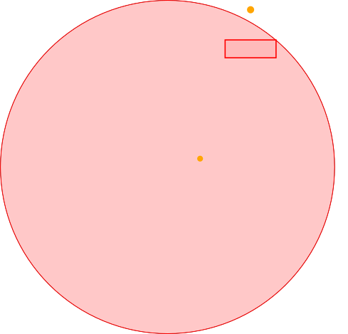
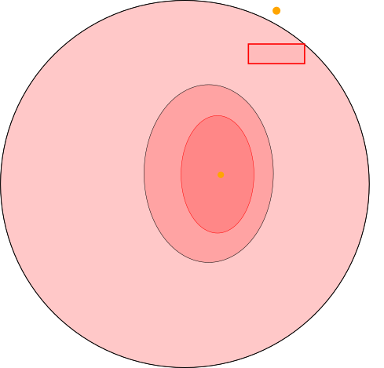
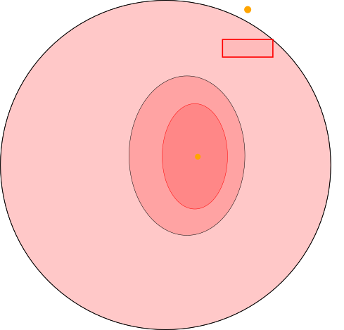
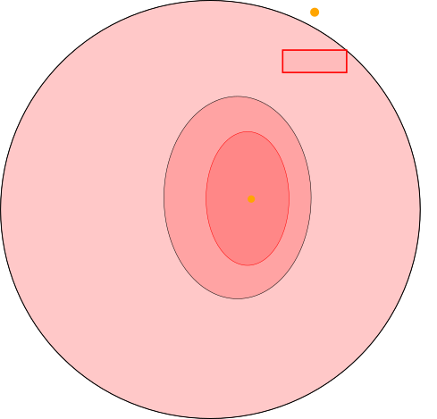

Robust-Adaptive Control
beyond Quadratic Costs
Edouard Leurent , Denis Efimov , Odalric-Ambrym Maillard
Hi everyone, my name is Edouard, and I will be presenting our joint work with Denis and Odalric about the robust adaptive control of linear systems, beyond quadratic costs.
Most RL algorithms rely on trial and error
Random explorationOptimism in the face of uncertainty
None are suitable for a safety-critical application
Pessimism in the face of uncertaintyLearn from observations to improve performance
Our motivation comes from the observation that most Reinforcement Learning algorithms rely on trial and error, through either 📠random exploration, 📠or optimism in the face of uncertainty
Linear dynamics with structured uncertainty
$
\quad\text{ where }\color{orange}{A(\theta)} = A + \sum_{i=1}^d\color{orange}{\theta_i}\phi_i,
$
known , and the disturbance $\omega(t)$ is bounded .
Our setting is the following: we consider a linear system with state x, action u, bounded disturbance \omega, 📝 and in which the dynamics linearly depend on a parameter \theta that is unknown.
Build a confidence region for the dynamics
\[\mathbb{P}\left[\color{orange}{\theta}\in\color{crimson}{\mathcal{C}_{N,\delta}}\right]\geq 1-\delta\]
Plan robustly against the worst case outcome $\color{crimson}{V^r}$
\[\color{limegreen}{\sup_{u}} \underbrace{\color{crimson}{\inf_{\substack{\theta \in \mathcal{C}_{N,\delta}\\ \omega\in[\underline\omega,\overline\omega]}}} \expectedvalue \left[\sum_{n=0}^\infty \gamma^n R(x(t_n)) \middle| \color{limegreen}{u}, \color{crimson}{{\theta}}, \color{crimson}{\omega}\right]}_{\color{crimson}{V^r(u)}}\]
In order to ensure safety, we follow the robust control framework.
Related work
Robust Dynamic Programming ⮕ finite $\mathcal{S}$
Quadratic costs (LQ) ⮕ stabilization only
We only require the rewards $R$ to be bounded .
There are several lines of work in the literature attempting to solve this minimax control problem. They include
Algorithm
Our Algorithm is composed of 3 steps.
Confidence ellipsoid $\color{crimson}{\cC_{N,\delta}}$ from(Abbasi-Yadkori et al., 2011)
\[\small \mathbb{P}\left[\|\color{orange}{\theta}-\color{crimson}{\theta_{N}}\|_{\color{crimson}{G_{N}}} \leq \color{crimson}{\beta_N(\delta)}\right]\geq 1-\delta\]


First, 📝we leverage the literature of non-asymptotic linear regression and adapt a result by Abbasi-Yadkori et al from 2011 to build a confidence ellipsoid for the dynamical parameters \theta. This ellipsoid shinks as we collect more and more data📝📝📝.
Propagate uncertainty $\color{crimson}{\theta\in\cC_{N,\delta}}$ through time and bound the reachable states
\[\color{lightskyblue}{\underline x(t)} \leq x(t) \leq \color{lightskyblue}{\overline x(t)}\]
(Leurent et al., 2019)
\[
\scriptsize
\begin{aligned}
\color{lightskyblue}{\dot{\underline{x}}(t)} & = \color{crimson}{A(\theta_N)}\color{lightskyblue}{\underline{x}(t)}-\color{crimson}{\Delta A_{+}}\underline{x}^{-}(t)-\color{crimson}{\Delta A_{-}}\overline{x}^{+}(t) +Bu(t)+D^{+}\underline{\omega}(t)-D^{-}\overline{\omega}(t),\\
\color{lightskyblue}{\dot{\overline{x}}(t)} & = \color{crimson}{A(\theta_N)}\color{lightskyblue}{\overline{x}(t)}+\color{crimson}{\Delta A_{+}}\overline{x}^{+}(t)+\color{crimson}{\Delta A_{-}}\underline{x}^{-}(t) +Bu(t)+D^{+}\overline{\omega}(t)-D^{-}\underline{\omega}(t), \\
\end{aligned}
\]
Second, 📝we propagate this model uncertainty 📝through📠time📠to bound the set of reachable states📠within an interval 📝, denoted lower-bar x, and upper-bar x, computed with a set-predictor that we introduced in prior work.
Use the predicted intervals in a pessimistic surrogate objective
\[\small
\color{orange}{\hat{V}^r(u)} = \sum_{n=N+1}^\infty \gamma^n \color{orange}{\min_{\color{lightskyblue}{\underline{x}(t_n)}\leq x \leq\color{lightskyblue}{\overline{x}(t_n)}} R(x)}
\]
Third, we leverage these state intervals to build a pessimistic surrogate objective, which evaluates at each time-step the minimum of the reward function over the predicted interval.
Theorem (Lower bound)
$
\color{orange}{\underbrace{\hat{V}^r(u)}_{\substack{\text{surrogate}\\\text{value}}}}
\leq
\color{crimson}{\underbrace{{V}^r(u)}_{\substack{\text{robust}\\\text{value}}}}$
$\leq
\color{limegreen}{\underbrace{{V}(u)}_{\substack{\text{true}\\\text{performance}}}}$
📝As a first result, we prove that the surrogate objective that we optimize is a lower-bound of the robust value, and that is because we are conservative in every approximation that we make.
Theorem Under two conditions:
Lipschitz reward $R$;
Stability condition: there exist $P>0,\,Q_0,\,\rho,\,N_0$ such that
\[\forall \color{orange}{N}>N_0,\quad\begin{bmatrix}
\color{orange}{A({\theta}_{N})}^\top P + P \color{orange}{A({\theta}_{N})} + Q_0 & P|D| \\
|D|^\top P & -\rho I_r \\
\end{bmatrix}< 0;\]
with probability $1-\delta$,
\[
\underbrace{V(a_\star) - V(a_K)}_{\substack{\text{suboptimality}}} \leq
\color{crimson}{\underbrace{\Delta_\omega}_{\substack{\text{robustness to}\\ \text{disturbances}}}} + \color{lightskyblue}{\underbrace{\mathcal{O}\left(\frac{\beta_N(\delta)^2}{\lambda_{\min}(G_{N,\lambda})}\right)}_{\text{estimation error}}} +
\color{limegreen}{\underbrace{\mathcal{O}\left(K^{-\frac{\log 1/\gamma}{\log \kappa}}\right)}_{\text{planning error}}}
\]
In our second result, we bound this gap and resulting suboptimality under two conditions: namely, 📝a smoothness assumption for the reward, 📝and a stability condition for the estimated dynamics, in the form of a Linear Matrix Inequality.
Asymptotic Near-optimality
Corollary Under an additional persistent excitation (PE) assumption:
\[\exists \underline{\phi},\overline{\phi}>0: \forall n\geq n_0,\quad \underline{\phi}^2 \leq \lambda_{\min}(\Phi_{n}^\top\Sigma_{p}^{-1}\Phi_{n}) \leq \overline{\phi}^2,\]
the stability condition 2. can be relaxed to:
$$\begin{bmatrix}
\color{orange}{A(\theta)}^\top P + P \color{orange}{A(\theta)} + Q_0 & P|D| \\
|D|^\top P & -\rho I_r \\
\end{bmatrix}< 0;$$
and the bound takes the more explicit form
${V(a_\star)} - {V(a_K)} \leq
\color{crimson}{\Delta_\omega} +$
$\color{lightskyblue}{{\mathcal{O}\left(\frac{\log\left(N^{d/2}/\delta\right)}{N}\right)}}$ $ + $
$\color{limegreen}{{\mathcal{O}\left(K^{-\frac{\log 1/\gamma}{\log \kappa}}\right)}}$
These concerns are partially adressed in a corollary, which states that under the favorable event that the features are sufficiently excited, 📝 we can relax the stability condition to apply to the true system rather than our estimates, 📝and the estimation error term in the bound takes a more explicit form which ensures asymptotic near optimality as the number of samples N📝 and the planning budget K📝 go to infinity.
Experiments
We demonstrate the applicability of our method in two experiments.
Estimated dynamics $\color{orange}{A({\theta}_{N})}$
First, we consider an obstacle avoidance problem with unknown friction coefficients. When planning with the estimated parameters \theta_N, the model bias leads to prediction errors, and eventually to collisions.
Robust planning with $\color{crimson}{\cC_{N,\delta}}$
In contrast, when planning robustly with respect to model uncertainty, our confidence intervals over trajectories ensure that we never get too close to an obstacle and reach the goal safely.
Here, the estimated confidence ellipsoid is shown on the right panel.
Estimated dynamics $\color{orange}{A({\theta}_{N})}$
Here is another example, where the nominal agent collides with an obstacle
Robust planning with $\color{crimson}{\cC_{N,\delta}}$
and the robust agent in the same scene.
Performance
failures
min
avg $\pm$ std
Oracle
$0\%$
$11.6$
$14.2 \pm 1.3$
Nominal
$4\%$
$2.8$
$13.8 \pm 2.0$
DQN (trained)
$6\%$
$1.7$
$12.3 \pm 2.5$
Robust
$0\%$ $10.4$ $13.0 \pm 1.5$
Over 100 runs, our proposed robust agent 📝manages to avoid collisions and achieves the highest minimum return, 📝at the price of a loss of average performance compared to the nominal approach that plans with the estimated dynamics.
In this figure, we plot the average suboptimality for each agent, along with its associated 95% confidence interval, with respect to the number N of observed transitions. The suboptimality is evaluated as follows: in each state of a trajectory, we substract the empirical return achieved by the agent from the optimal return that it would have obtained had it acted optimally, which is computed by running a oracle planner with access to the true dynamics and a high computational budget in parallel.
This graph shows that, despite the fact that the assumptions of our Theorem do not hold, since for example the rewards are discontinuous at collision states, the suboptimality of the robust agent still decreases with the number of observations. Thus, as we desired, the agent gets more efficient as it is more confident, while acting safely at all times.
The nominal agent performs better on average, but has a higher variance and suffers collisions from time to time.
What is our modelling assumptionwrong ?
The adequacy of a model $\color{lightskyblue}{(A,\phi)}$ can be evaluated
Use multiple models $\color{lightskyblue}{(A^m,\phi^m)}$,
Our algorithm has been relying on a modelling assumption about the structure of the state matrix. But what if it does not hold?
📝A benefit of our approach is that the adequacy of a model with observations can be evaluated, by assessing the validity of the predicted confidence intervals whenever a new state transition is observed.
📝This allows us to propose an extension of our framework in which multiple modelling assumptions are considered, rejected and balanced through a robust selection mechanism. This provides the robust agent with the ability to make multimodal predictions.
github.com/eleurent/highway-env/
And we illustrate this ability in a second experiment, where an autonomous vehicle must cross an unsignalized intersection while driving among other vehicles whose destinations and driving styles are unknown.
github.com/eleurent/highway-env/
When the number of vehicles and resulting uncertainty are high, the robust agent is fairly careful and waits until the intersection is clear before continuing.
Performance
failures
min
avg $\pm$ std
Oracle
$0\%$
$6.9$
$7.4 \pm 0.5$
Nominal 1
$4\%$
$5.2$
$7.3 \pm 1.5$
Nominal 2
$33\%$
$3.5$
$6.4 \pm 0.3$
DQN (trained)
$3\%$
$5.4$
$6.3 \pm 0.6$
Robust
$0\%$ $6.8$ $7.1 \pm 0.3$
As before, over 100 runs the robust agent manages to ensure safety at all times contrary to other baselines, at the price of a decreased average performance.
Code available ateleurent.github.io/robust-beyond-quadratic
I am looking for a postdoctoral position.
So, this is it, the source code of our experiments is available at the following URL, and I would like to take this opportunity to mention that I am looking for a postdoctoral position.
Thank you for your attention!
 


 



 github.com/eleurent/highway-env/
github.com/eleurent/highway-env/